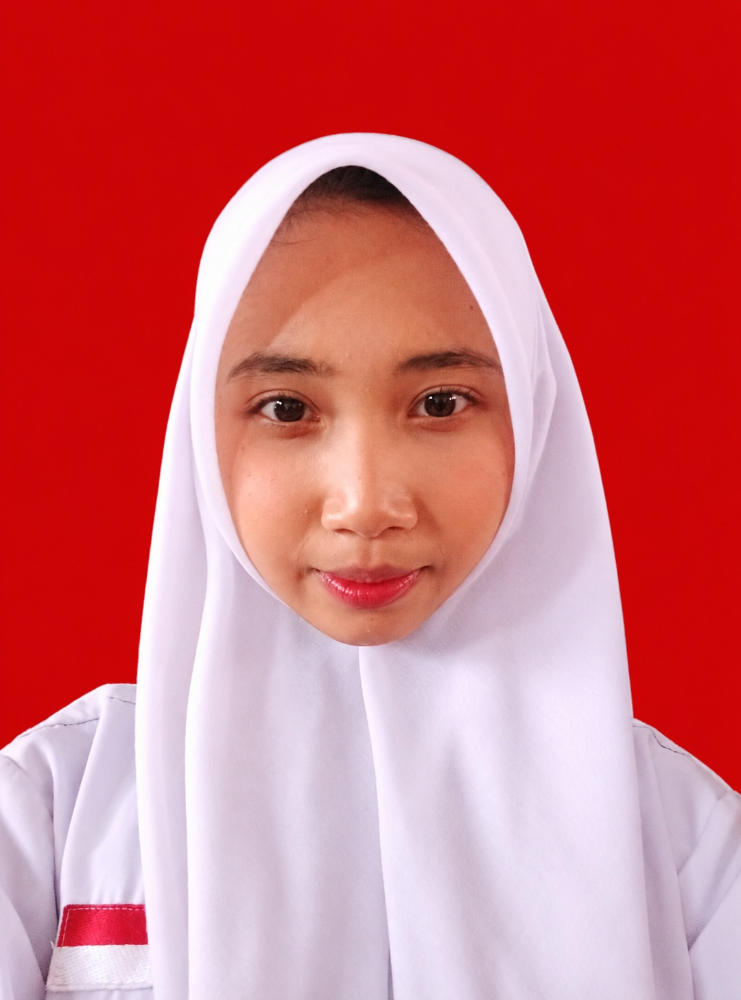

CURRICULUM VITAE
Keyla Salshabilla
Pelajar | Memiliki minat dalam bidang memasak
Data Diri
Nama
Keyla Salshabilla
Umur
16 tahun
Tanggal Lahir
16 Desember 2009
Alamat
Kp. Cigugur, Kecamatan Ciparay
Hobi & Keahlian
Memasak
Keterampilan memasak
Saya senang memasak dan terus belajar mengembangkan keterampilan dalam menyiapkan berbagai hidangan.
Pengalaman Ekstrakurikuler
Ekstrakurikuler Basket
Pernah mengikuti ekstrakurikuler basket di sekolah. Kegiatan ini menjadi pengalaman untuk belajar kerja sama, disiplin, dan tanggung jawab.